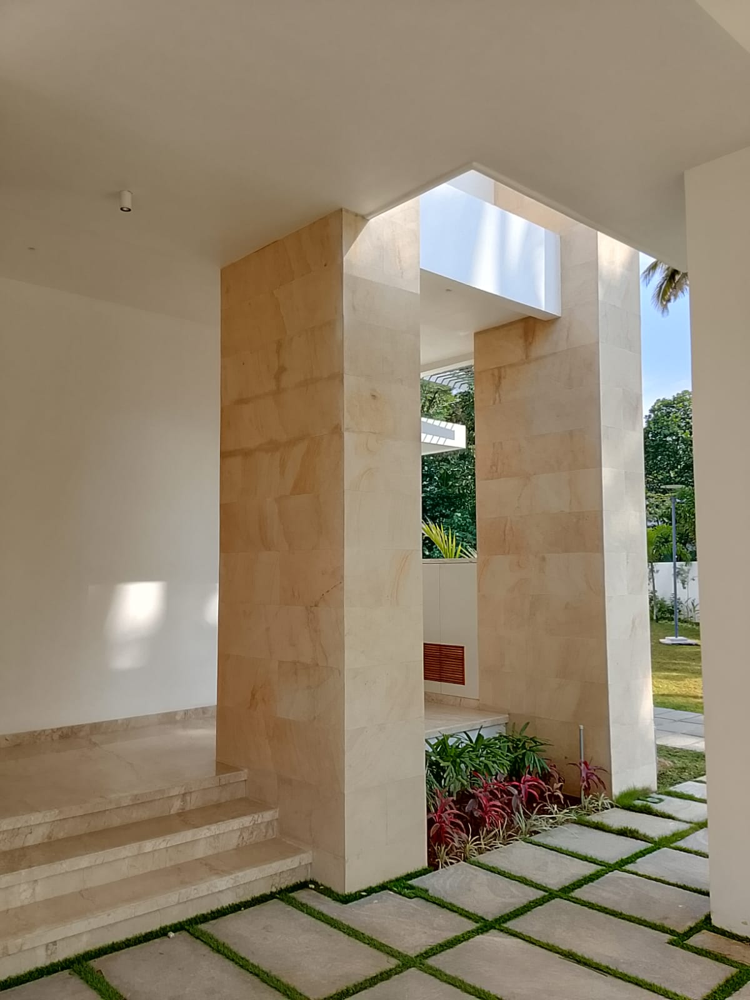

ARK material collection
Stone
Veneer.
Natural movement, warmth and depth for architectural surfaces that deserve a lasting presence.
Explore catalogue ↗
Natural character
Built for a sense of arrival.
Stone veneer brings texture and tonal variation to interior and exterior surfaces. At ARK, it is used for feature walls, façade moments, entry columns and courtyards where material character matters.
FaçadesGrounded exterior expression
ColumnsTextured arrival spaces
InteriorsQuiet, natural feature walls
